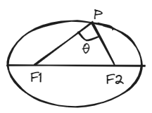
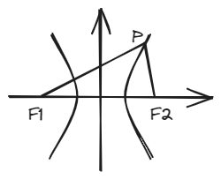
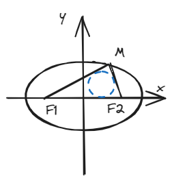

结论一：焦点三角形面积公式
一、结论描述
如图，在椭圆上有一点\(P \)，\(\angle F_1 PF_2 = \theta \)，\(F_1 \) 、\(F_2 \)为焦点，则\(S_{\Delta PF_1 F_2} = b^2 \tan \frac{\theta}{2} \)。

如图，在双曲线上有一点\(P \)，\(\angle F_1 PF_2 = \theta \)，\(F_1 \) 、\(F_2 \)为焦点，则\(S_{\Delta PF_1 F_2} = b^2 \cot \frac{\theta}{2} \)。

二、结论证明
此处仅以椭圆（水平放置）为例进行证明，其他情况思路类似 由面积公式：
由余弦定理：
\( (2) \)式左右同时加上\( 2|PF_1||PF_2| \)可得：
由此可得\(|PF_1||PF_2| \)为：
\( (4) \)式带入\( (1) \)式，同时三角函数变换一下可得：
三、例题
椭圆方程：\( \frac{x^2}{4}+\frac{y^2}{3}=1\)，\(P \)是椭圆上一点，\(F_{1} \)，\(F_{2} \)是椭圆的左右焦点，且\( \angle F_{1}PF_{2}=60° \)，则\(\bigtriangleup PF_{1}F_{2} \)的内切圆半径\(r=\_\_\_\_\_ \)

四、拓展结论
结论1：椭圆上一点与两焦点所成角度（即\(\angle F_1PF_2 \)）中有一个最大值，在上下顶点处取到这个最大值（此处仅考虑水平放置的椭圆）。
证明：
由\((4)\)式可得：
又由均值不等式可得：
\((7)\)式在二者相等时取等 即\(|PF_1|=|PF_2| \)时\(\theta \)取到最大值
结论2:在椭圆中，\(|PF_1||PF_2|= \frac{2b^2}{1+\cos \theta}\)；在双曲线中，\(|PF_1||PF_2|= \frac{2b^2}{1-\cos \theta}\)。
证略，请见\((4)\)式